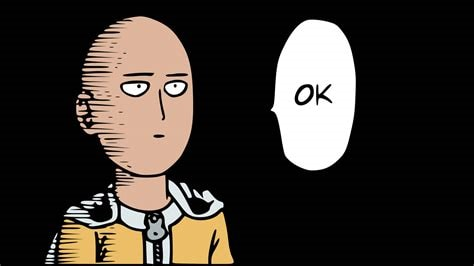

I am Arun Thakur, a Computer Science Engineering student at Chandigarh University (Batch 2022-2026) with a passion for technology, problem-solving, and innovation. With a CGPA of 8.23, I have worked on various projects in AI, blockchain, IoT, and full-stack development, constantly pushing myself to learn and grow. My technical skills include Java, Python, Solidity, React, and database management, and I have gained hands-on experience through internships and industrial training. Currently, I am developing an **AI Chatbot for Personalized Mental Health Therapy**, utilizing NLP and AI-driven emotional analysis to provide meaningful interactions. I love exploring emerging technologies, staying updated with industry trends, and applying my knowledge to real-world challenges. Apart from coding, I enjoy video and photo editing, which allows me to express my creativity in different ways.
